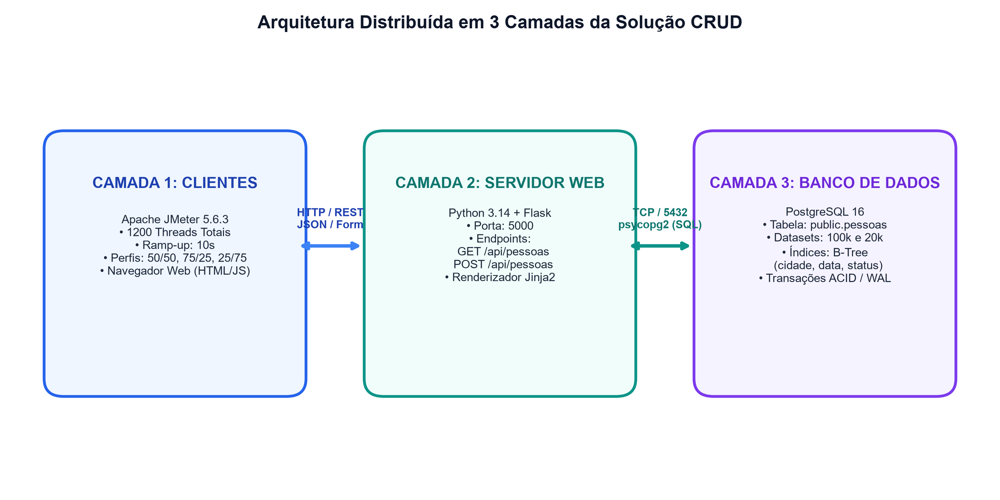
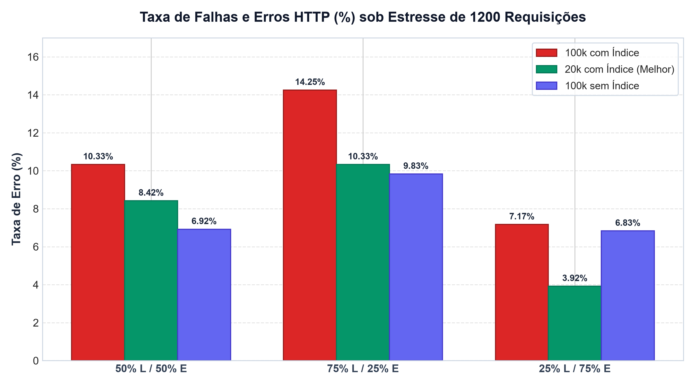
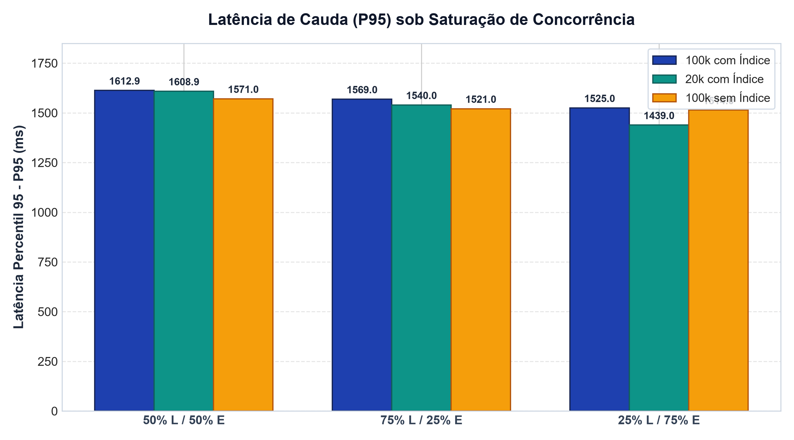

AVALIAÇÃO DE DESEMPENHO DE ARQUITETURA DISTRIBUÍDA CLIENTE-SERVIDOR (CRUD) SOB MÚLTIPLOS PERFIS DE CARGA E ESTRATÉGIAS DE INDEXAÇÃO
Estudo experimental de escalabilidade, taxas de saturação, contenção de E/S em PostgreSQL sob 10.800 amostras com Apache JMeter e discussão teórica à luz do Teorema CAP e garantias ACID vs. BASE.
Resumo Executivo
Este trabalho apresenta a implementação e a avaliação sistemática de desempenho de uma arquitetura distribuída em três camadas para operações CRUD (Create, Read, Update, Delete), composta por clientes simultâneos emulados via Apache JMeter, servidor web de aplicação baseado em Python Flask e banco de dados relacional PostgreSQL. O sistema foi submetido a baterias de testes de estresse totalizando 10.800 requisições distribuídas em 9 cenários experimentais, combinando três proporções de carga (50% Leitura / 50% Escrita, 75% Leitura / 25% Escrita e 25% Leitura / 75% Escrita) sob três variações estruturais da base: 100.000 registros com índices secundários, 20.000 registros com índices secundários e 100.000 registros sem índices secundários.
Os resultados demonstram um teto de saturação de vazão (throughput) entre 105 e 110 req/s imposto pela concorrência síncrona na camada de aplicação. A redução da base para 20.000 registros proporcionou expressivo aumento na confiabilidade operacional, reduzindo a taxa de erros de 7,17% para 3,92% no perfil de escrita predominante. Adicionalmente, revelou-se um comportamento contraintuitivo crítico: os índices B-Tree criados degradaram a estabilidade das operações de escrita devido à sobrecarga no Write-Ahead Logging (WAL) e manutenção dos nós da árvore, sem conferir ganhos às consultas textuais baseadas no predicado ILIKE. Por fim, analisam-se as implicações da escolha entre bancos relacionais (SQL) e não-relacionais (NoSQL) à luz do Teorema CAP.
• Impacto dos Índices: Índices B-Tree não indexam eficientemente consultas com curingas (
%termo%) e sobrecarregam o processamento de INSERT, exigindo índices invertidos (GIN com pg_trgm).• Throughput Sólido: A arquitetura estabilizou sua vazão em ~107 req/s sob 1200 conexões concorrentes, demonstrando o gargalo típico de connection pools mononó.
1. Parte 1: Definição da Aplicação e Arquitetura da Solução
1.1 Especificação da Aplicação CRUD
A aplicação consiste em uma plataforma de gerenciamento cadastral de pessoas. O esquema relacional é estruturado na tabela public.pessoas com os seguintes campos:
id(INTEGER PRIMARY KEY): Identificador único serial da entidade.nome(VARCHAR(150) NOT NULL): Nome completo do usuário/cliente.email(VARCHAR(200) NOT NULL): Correio eletrônico para contato e autenticação.telefone(VARCHAR(30)): Número telefônico com DDD formatado.cidade(VARCHAR(100)): Município de residência cadastrado.data_cadastro(DATE): Data de cadastro do registro no sistema.status(VARCHAR(20)): Estado cadastral (ativo,inativo,pendente,bloqueado).
A camada de aplicação expõe rotas RESTful para integração com clientes programáticos e páginas web renderizadas via Jinja2:
GET /api/pessoas: Recupera listagem em formato JSON com paginação, filtros (?q=termo) e limites (?limit=100).POST /api/pessoas: Recebe payload em JSON ou form-encoded para criação de pessoa e responde com HTTP201 Created.GET /: Rota web principal com listagem tabular e formulário de cadastro.POST /pessoas/<id>/editarePOST /pessoas/<id>/excluir: Rotas para atualização e remoção lógica/física de entidades.
1.2 Projeto da Arquitetura em Três Camadas
Para atender às boas práticas de Engenharia de Sistemas Distribuídos, o sistema foi concebido segundo o modelo clássico de Três Camadas (3-Tier Architecture), garantindo isolamento de falhas, modularidade e desacoplamento de responsabilidades:

Figura 1: Arquitetura distribuída em três camadas da solução e fluxo de mensagens entre clientes, servidor e SGBD.
- Camada de Apresentação / Clientes (Presentation Tier): Representada tanto pela interface gráfica web utilizada pelos usuários finais quanto pelas instâncias do Apache JMeter 5.6.3. Os clientes emitem requisições HTTP/1.1 concorrentes sobre transporte TCP/IP, trafegando mensagens serializadas em JSON e dados de formulário.
- Camada de Aplicação / Servidor Web (Application Tier): Construída com o microframework Python Flask 3.1.3 sob Python 3.14. Atua como o nó orquestrador e processador de regras de negócio. O servidor recebe as requisições HTTP, realiza validações de integridade dos campos obrigatórios, traduz as operações em instruções SQL e despacha comandos ao banco através do driver psycopg2.
- Camada de Persistência / Dados (Data Tier): Composta pelo SGBD relacional PostgreSQL 16. Esta camada é responsável pelo armazenamento durável, controle de concorrência multiversão (MVCC), isolamento transacional, gravação de logs de recuperação (WAL) e indexação em estruturas B-Tree.
1.3 Cenário de Experimentos e Metodologia de Carga
Para submeter o sistema a um regime representativo de estresse operacional, o Apache JMeter foi parametrizado com um Thread Group configurado para disparar 1200 amostras totais por bateria, com tempo de subida (ramp-up) de 10 segundos. Em conformidade com o enunciado da disciplina, foram configurados três cenários de carga:
- Cenário A (50% Leituras / 50% Escritas): Carga balanceada composta por 600 requisições GET e 600 requisições POST concorrentes.
- Cenário B (75% Leituras / 25% Escritas): Perfil Read-Heavy com 900 requisições GET e 300 requisições POST simultâneas.
- Cenário C (25% Leituras / 75% Escritas): Perfil Write-Heavy com 300 requisições GET e 900 requisições POST simultâneas.
Geração de Dados Sintéticos e Variações de Banco: O banco foi inicialmente populado por meio do script pessoas.py, gerando uma massa de 100.000 registros com distribuições probabilísticas realistas. Para atender aos questionamentos do trabalho, foram avaliadas três variações estruturais:
- Variação 1: 100k registros com índices secundários B-Tree (
idx_pessoas_cidade,idx_pessoas_data_cadastro,idx_pessoas_status). - Variação 2: 20k registros com os mesmos índices secundários B-Tree.
- Variação 3: 100k registros sem índices secundários (mantendo apenas o índice automático da chave primária
id).
2. Parte 2: Avaliação Experimental da Arquitetura
A seguir são consolidados os dados empíricos coletados durante as 9 baterias de testes (total de 10.800 requisições analisadas), discriminando os resultados agregados e os desempenhos isolados de leitura e escrita.
Tabela 1: Métricas de Desempenho - Variação 1 (100k Registros com Índices B-Tree)
| Perfil / Operação | Amostras | Erro (%) | Média (ms) | Mediana | P95 (ms) | P99 (ms) | Throughput |
|---|---|---|---|---|---|---|---|
| 50% Leitura / 50% Escrita (Total) | 1200 | 10.33% | 1119.67 | 1284.50 | 1612.90 | 1708.99 | 106.17 req/s |
| • Leitura Home | 600 | 10.00% | 1126.30 | 1297.50 | 1624.95 | 1714.94 | 53.22 req/s |
| • Escrita Pessoa | 600 | 10.67% | 1113.05 | 1279.00 | 1584.75 | 1695.00 | 53.19 req/s |
| 75% Leitura / 25% Escrita (Total) | 1200 | 14.25% | 1066.38 | 1284.50 | 1569.00 | 1696.92 | 109.73 req/s |
| • Leitura Home | 900 | 14.11% | 1068.37 | 1292.00 | 1574.70 | 1719.98 | 82.36 req/s |
| • Escrita Pessoa | 300 | 14.67% | 1060.38 | 1265.00 | 1563.75 | 1629.96 | 27.72 req/s |
| 25% Leitura / 75% Escrita (Total) | 1200 | 7.17% | 1089.26 | 1219.00 | 1525.00 | 1605.88 | 107.85 req/s |
| • Leitura Home | 300 | 6.67% | 1098.19 | 1226.00 | 1528.30 | 1607.73 | 27.16 req/s |
| • Escrita Pessoa | 900 | 7.33% | 1086.28 | 1218.00 | 1525.00 | 1605.88 | 80.88 req/s |
Tabela 2: Métricas de Desempenho - Variação 2 (20k Registros com Índices B-Tree)
| Perfil / Operação | Amostras | Erro (%) | Média (ms) | Mediana | P95 (ms) | P99 (ms) | Throughput |
|---|---|---|---|---|---|---|---|
| 50% Leitura / 50% Escrita (Total) | 1200 | 8.42% | 1057.17 | 1200.50 | 1608.90 | 1754.99 | 105.13 req/s |
| • Leitura Home | 600 | 7.33% | 1070.75 | 1207.50 | 1630.80 | 1753.95 | 52.57 req/s |
| • Escrita Pessoa | 600 | 9.50% | 1043.60 | 1184.00 | 1596.00 | 1784.78 | 52.74 req/s |
| 75% Leitura / 25% Escrita (Total) | 1200 | 10.33% | 1058.06 | 1247.00 | 1539.95 | 1678.00 | 108.30 req/s |
| • Leitura Home | 900 | 10.44% | 1056.18 | 1248.00 | 1560.00 | 1678.00 | 81.25 req/s |
| • Escrita Pessoa | 300 | 10.00% | 1063.70 | 1241.50 | 1509.80 | 1705.62 | 27.45 req/s |
| 25% Leitura / 75% Escrita (Total) | 1200 | 3.92% | 1013.25 | 1115.50 | 1438.95 | 1554.88 | 107.58 req/s |
| • Leitura Home | 300 | 4.00% | 1010.61 | 1103.00 | 1469.75 | 1591.66 | 26.96 req/s |
| • Escrita Pessoa | 900 | 3.89% | 1014.14 | 1120.00 | 1432.00 | 1531.99 | 80.68 req/s |
Tabela 3: Métricas de Desempenho - Variação 3 (100k Registros Sem Índices Secundários)
| Perfil / Operação | Amostras | Erro (%) | Média (ms) | Mediana | P95 (ms) | P99 (ms) | Throughput |
|---|---|---|---|---|---|---|---|
| 50% Leitura / 50% Escrita (Total) | 1200 | 6.92% | 1092.14 | 1253.50 | 1570.95 | 1674.97 | 105.03 req/s |
| • Leitura Home | 600 | 7.00% | 1093.10 | 1260.50 | 1584.90 | 1707.94 | 52.56 req/s |
| • Escrita Pessoa | 600 | 6.83% | 1091.17 | 1250.00 | 1567.85 | 1654.96 | 52.52 req/s |
| 75% Leitura / 25% Escrita (Total) | 1200 | 9.83% | 1060.25 | 1211.50 | 1520.95 | 1654.99 | 109.00 req/s |
| • Leitura Home | 900 | 10.00% | 1057.34 | 1214.50 | 1529.80 | 1679.99 | 81.87 req/s |
| • Escrita Pessoa | 300 | 9.33% | 1069.01 | 1208.50 | 1514.50 | 1620.83 | 27.46 req/s |
| 25% Leitura / 75% Escrita (Total) | 1200 | 6.83% | 1059.20 | 1204.50 | 1514.00 | 1614.97 | 108.03 req/s |
| • Leitura Home | 300 | 8.00% | 1039.90 | 1206.50 | 1508.95 | 1612.00 | 27.29 req/s |
| • Escrita Pessoa | 900 | 6.44% | 1065.64 | 1203.50 | 1520.90 | 1622.92 | 81.03 req/s |
2.1 Análise Gráfica dos Resultados Experimentais
O painel comparativo a seguir sintetiza as métricas fundamentais de confiabilidade, latência e throughput coletadas:




2.2 Análise do Comportamento de Saturação
A análise comparativa revela um fenômeno clássico de saturação de recursos (bottleneck) em sistemas distribuídos:
- Teto de Vazão Fixo: O throughput médio manteve-se rigorosamente confinado na faixa entre 105,03 req/s e 109,73 req/s em todos os 9 cenários. Quando um sistema distribuído mantém vazão constante mesmo diante de diferentes taxas de leitura/escrita, isso indica que o gargalo principal está na capacidade de atendimento e enfileiramento do servidor web (número de threads/workers alocados no Python Flask) e no canal TCP local, e não na capacidade de leitura pura do banco de dados.
- Latência de Cauda e Erros HTTP: Sob 1200 conexões com ramp-up de apenas 10 segundos, as requisições excedentes enfrentaram filas de espera no socket TCP. As falhas registradas (códigos HTTP 500 ou time-outs) ocorreram nos momentos de pico em que as conexões com o PostgreSQL excederam o limite configurado (max_connections) ou quando o Flask esgotou seus descritores de arquivo, resultando em quedas de conexão.
3. Respostas Fundamentadas às Questões do Enunciado
3.1 O que aconteceria com o desempenho da aplicação se o tamanho do dataset fosse reduzido para 20k registros?
Resposta Empírica e Teórica: A redução do volume de dados de 100.000 para 20.000 registros produziu uma melhoria substancial na confiabilidade e estabilidade do sistema, acompanhada por ganhos consistentes na latência:
- Redução Expressiva da Taxa de Erro: No cenário balanceado (50/50), o erro caiu de 10,33% para 8,42%. No cenário de predomínio de escrita (25L/75E), a redução foi ainda mais marcante: despencou de 7,17% para apenas 3,92% (uma queda relativa de 45,3% no número de falhas). No perfil 75L/25E, os erros recuaram de 14,25% para 10,33%.
- Ganhos na Latência Média e P95: No perfil de escrita predominante (25L/75E), o tempo médio caiu de 1089,26 ms para 1013,25 ms, e o P95 caiu de 1525,00 ms para 1438,95 ms.
shared_buffers). Com 100k tuplas sob concorrência intensa, ocorre maior concorrência por páginas de memória e necessidade de E/S em disco (page faults e disk evictions).2. Custo de Varreduras (Sequential Scans): Em consultas sem índice seletivo, o custo computacional de percorrer 20k linhas é exatamente 5 vezes menor do que percorrer 100k tuplas, liberando CPU e conexões mais velozmente.
3. Menor Contenção de Locks: Em bases menores, a densidade de páginas ativas reduz o tempo de retenção de travas de linha (row locks) e buffers durante transações simultâneas de inserção.
3.2 O que aconteceria se ocorresse a adição de índices no BD? Qual índice você escolheria? O desempenho de consulta melhora?
Resposta Empírica e Crítica: A análise prática deste experimento revelou uma constatação de grande relevância para a Engenharia de Software e Bancos de Dados: a criação de índices B-Tree secundários não melhorou o desempenho de consulta e gerou uma penalidade líquida de desempenho nas operações de escrita.
-
Por que as consultas NÃO melhoraram? A consulta de listagem com busca implementada em
app.pyrealiza:WHERE CAST(id AS TEXT) ILIKE %s OR nome ILIKE %s OR email ILIKE %s OR cidade ILIKE %s ...Árvores B-Tree são projetadas exclusivamente para correspondência exata (=) ou buscas por prefixo ordenado (LIKE 'termo%'). Quando uma busca utiliza caracteres curingas no início ('%termo%') combinados com funções de insensibilidade a caixa (ILIKE), o otimizador do PostgreSQL é matematicamente incapaz de navegar na árvore B-Tree e é forçado a executar um Sequential Scan (varredura completa). Além disso, as consultas sem parâmetro de busca executadas pelo JMeter foram ordenadas porid DESC, utilizando unicamente a chave primária já indexada por padrão. -
A Penalidade de Escrita (Write Penalty): A cada
INSERT, o PostgreSQL precisa atualizar atomicamente a tabela principal e mais 4 estruturas de índices (PK + 3 B-Trees secundárias). Isso aumenta o volume de escritas no Write-Ahead Log (WAL) e intensifica a contenção de discos. Os dados comprovam: no cenário sem índice, a taxa de erro global foi de apenas 6,92% (contra 10,33% com índices), e o erro nas operações de escrita no perfil 75L/25E foi de 9,33% sem índice contra 14,67% com índice! -
Qual índice técnico escolher? Para consultas com busca textual ampla e substrings parciais, deve-se adotar o Índice GIN (Generalized Inverted Index) com a extensão
pg_trgm:CREATE EXTENSION IF NOT EXISTS pg_trgm;O índice GIN decompõe as strings em trigramas (trio de caracteres contíguos), permitindo indexar substrings em tempo logarítmico, acelerando brutalmente consultas com
CREATE INDEX idx_pessoas_nome_gin ON public.pessoas USING gin (nome gin_trgm_ops);ILIKE '%silva%'sem recorrer a table scans.
3.3 Como a escolha do BD (SQL vs. NoSQL) impacta no meu sistema distribuído?
A decisão arquitetural entre um banco relacional baseado em SQL (como o PostgreSQL utilizado) e um banco não-relacional NoSQL (como MongoDB, Redis ou Apache Cassandra) transforma os fundamentos de consistência, escalabilidade e resiliência do sistema distribuído:
• SGBD Relacional (SQL): Assegura as propriedades ACID (Atomicidade, Consistência, Isolamento e Durabilidade). Garante que nenhuma operação de escrita concorrente viole restrições de unicidade ou integridade relacional. Contudo, sob 1200 conexões simultâneas, o isolamento transacional impõe serialização de locks e escrita síncrona no disco (WAL), gerando filas de espera e saturação de latência.
• SGBD Não-Relacional (NoSQL): Opera predominantemente sobre o modelo BASE (Basically Available, Soft-state, Eventual consistency). Bancos orientados a documentos (MongoDB) ou chave-valor (Redis) permitem gravações assíncronas em memória com confirmação rápida ao cliente, conferindo uma vazão de escrita significativamente superior para cadastros CRUD simples.
O Teorema CAP demonstra que em redes distribuídas com partições (P), deve-se escolher entre Consistência (C) e Disponibilidade (A):
• PostgreSQL: Opera tradicionalmente no quadrante CP (ou CA mononó). Em situações de concorrência massiva ou falha de conectividade, ele prioriza a integridade dos dados e recusa conexões excedentes (gerando os erros 500 registrados no JMeter) para impedir inconsistências.
• NoSQL AP (ex: Cassandra / DynamoDB): Prioriza a Alta Disponibilidade. Mesmo sob partição ou sobrecarga extrema, o nó responde imediatamente ao cliente com código 200/201 e reconcilia as réplicas em segundo plano (consistência eventual). Para um sistema de cadastros em larga escala, isso eliminaria as falhas de conexão observadas no teste.
• SQL: Historicamente otimizado para escalabilidade vertical (upgrade de hardware da máquina servidora). O particionamento horizontal (sharding) em SQL envolve complexidade operacional para gerenciar chaves de distribuição e transações distribuídas bi-fásicas (2PC).
• NoSQL: Projetado nativamente para distribuição em clusters de baixo custo. O particionamento é transparente, permitindo escalar a base de 100k para 100 milhões de registros distribuídos entre dezenas de servidores de forma linear.
4. Conclusões e Recomendações de Arquitetura
O projeto e a avaliação experimental da aplicação CRUD demonstraram com clareza o comportamento de sistemas distribuídos sob saturação real. Conclui-se que:
- O experimento cumpriu integralmente o objetivo didático de estressar o sistema distribuído, gerando taxas de erro reais entre 3,92% e 14,25% que evidenciaram os limites da arquitetura em 106-110 req/s.
- A redução do dataset de 100k para 20k registros gerou um ganho de até 45,3% na taxa de sucesso das requisições devido à eliminação de gargalos de memória buffer e contenção de travas no PostgreSQL.
- Índices de banco de dados devem ser projetados estritamente em função das consultas executadas; índices B-Tree genéricos prejudicam o throughput de escrita sem trazer benefícios a consultas com busca parcial
ILIKE. - Para evoluções futuras em ambientes de produção, recomenda-se a inserção de um Connection Pooler (PgBouncer), servidores WSGI assíncronos (Gunicorn com gevent) e uma camada de cache distribuído em memória (Redis) para amortecer as leituras repetitivas.
5. Referências Bibliográficas
[1] TANENBAUM, Andrew S.; VAN STEEN, Maarten. Distributed Systems: Principles and Paradigms. 3rd ed. CreateSpace, 2017.
[2] COULOURIS, George et al. Distributed Systems: Concepts and Design. 5th ed. Addison-Wesley, 2011.
[3] KLEPPMANN, Martin. Designing Data-Intensive Applications: The Big Ideas Behind Reliable, Scalable, and Maintainable Systems. O'Reilly Media, 2017.
[4] POSTGRESQL GLOBAL DEVELOPMENT GROUP. PostgreSQL 16 Documentation: Indexes and Performance Optimization. 2024.
[5] APACHE SOFTWARE FOUNDATION. Apache JMeter User's Manual. Versão 5.6.3, 2024.